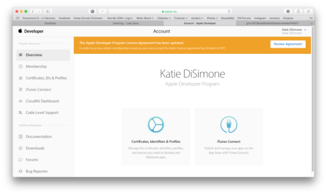
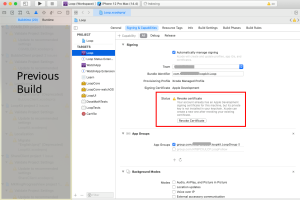
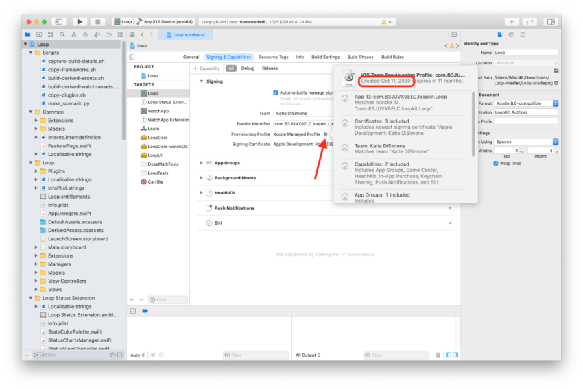
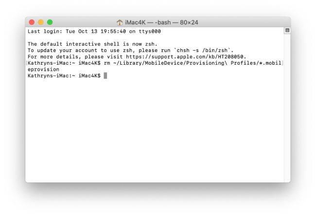
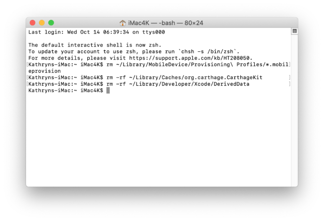

Updating Loop⌁
Time Estimate
- 25 minutes, if already have updates done
- 40-90 minutes, if need to install Apple update(s)
Summary
- Update macOS, Xcode, iOS, and/or watchOS
- Download updated Loop code
- Open in Xcode, sign targets
- Optional Actions
a. Delete old provisioning profiles
b. Clean cache and derived data
c. Add optional code customizations - Build onto your iPhone
- Resolve Build Errors
FAQs
- "What is an update?" Anytime you want to change branches, add or change a customizations, or grab updates to the same branch you built before...that is an update of your Loop app.
- "Do I delete my old Loop app first?" Definitely not! If you keep your Loop app on your phone, your Loop settings (and existing pod) will continue to work the same after the update. Seamless.
- "Do I need to start a new pod when I update?" No. Your existing pod session will continue seamlessly if you are using the same Developer Account to sign the Loop app targets as you did the last time you built.
- "What if I'm using a new/different developer account?" If you aren't building with the same developer account used when your existing app was built (this includes going from free to paid), then you will be installing a brand new (second) Loop app on your phone. Your existing pod won't work with the new app, so you might want to time this transition when you are due to change pods. Delete the old app once you get the new one all set up.
- "What if it is a new computer but the same developer account?" No big deal...you may want to review Build Steps 1, 8 and 9 to make sure the computer has at least the minimum version of the operating system and Xcode installed to be compatible with your phone iOS version. Don't forget to add command line tools and your developer account to Xcode preferences.
When to Update Loop⌁
The apps built and signed by you in Xcode with a paid developer account will only last for 12 months before they expire and need rebuilding. So, at least once per year you will have to rebuild your app and go through this update process.
Under ordinary circumstances, you do not have to update your Loop app until you are ready to grab new features. However, we encourage regular updates when a new version is released because they often contain bug fixes or improvements which may increase operational stability. Also, if you have updated your phone iOS since the last build, you should download a new copy.
Step 1: Install macOS and Xcode updates⌁
Update to macOS (10.15.4 minimum currently for iOS 14.4)
Between Loop app builds, there's a high likelihood that Apple has updated one or more of the systems involved in your Loop app. If you miss macOS or Xcode updates, you may run into build problems. For example, the newest iOS 14.4.1 (March 17, 2021) on your phone requires the newest Xcode version to properly build Loop. In order to get that update, you need to be running macOS 10.15.4 at a minimum. Check for macOS updates and install as needed. Double check this Compatibility Link and scroll down to the Xcode 11.x-12.x table for version minimums based on your current phone iOS. Sometimes those updates come out faster than updates to this page. Confused by that figure, look at the figure here in LoopDocs for an interpretation map.
Update to Xcode (12.4 minimum currently for iOS 14.4)
Now that you have updated your macOS, you should have the ability to see the most recent version of Xcode (12.4 is the latest release) in the App Store on your computer. UPDATE TO XCODE 12.4 BEFORE UPDATING YOUR LOOP APP. Phones running iOS 14.4 will not be able to have Loop installed using older Xcode versions.
Reboot and Follow Build Step 9 after updating Xcode
Make sure to restart your computer after updating Xcode and follow the instructions in Build Step 9. There's a known issue that happens often enough to be frustrating if you skip those steps. Either a build error about missing simulators or a "device not connected" (even when phone is connected). It's not always required...but this is a good easy ounce of problem prevention.
If you think you are immune from needing to update and want to skip Step 1 on this page, at least check the Compatibility Link above to make sure your macOS and Xcode meet their minimums based on your device's iOS before proceeding. I cannot emphasize how many people try to build without meeting the minimum versions.
Step 2: Check your Developer Account⌁
Apple updates its License Agreement for the Developer Program frequently. You need to login to your developer account to manually check if there is a new agreeement to accept. If you see a big red or orange banner across the top of your Developer Account announcing a new license agreement like shown below...please read and accept it before building Loop.

Step 3: Download Updated Loop Code⌁
After you've finished the updates to your devices listed above, you can move onto downloading updated Loop code. You will not be simply using your old downloaded Loop code (and in fact, you can delete those old folders now if you want).
If you aren't a developer or debugging, avoid the dev branch - and be warned once you install dev on a phone, you might have to completely delete the app to return to master or automatic-bolus.
There is a script available to build using a Workspace build that is fast and easy. It works for both master and automatic-bolus branches - the Build Select Script webpage has instructions on how to use the script. That script allows you to perform the rest of the steps on this page with a menu-driven interface.
If you prefer the zip download method, the links are repeated here. Click on ONE of the links below to download Loop code. Both master and automatic-bolus are pretty stable and widely used. The Compare Version webpage explains the differences between master and automatic-bolus.
- [Loop: master branch](https://github.com/LoopKit/Loop/archive/master.zip)
- [Loop: automatic-bolus branch](https://github.com/LoopKit/Loop/archive/automatic-bolus.zip)
- [Dev branch---in very rough shape right now, please only build if developer interested in debugging](https://github.com/LoopKit/Loop/archive/dev.zip)
Step 4a: Delete old provisioning profiles (Optional)⌁
Why is this step optional?⌁
If you build frequently, you do not need to delete the profiles every time. There is a small chance that deleting the profiles will force a new certificate – that will affect all apps built with your user ID.
What does it look like if you run into the force new certificate problem.
Revoke certificate
"Your account already has an Apple Development signing certificate for this machine . . ."
You must revoke your certificate to continue - all apps built with this certificate stop working within 24 hours.
Your Apple ID is not affected so you can build apps over existing apps with the new certificate

Infrequent Builder, App Expires soon⌁
If your app will expire soon or you build infrequently, then follow these steps. Here are instructions to check your Loop Expiration Date.
This is a new step in the updating process. If you build infrequently then do this step every time. Older versions of Xcode used to automatically create a "provisioning profile" as part of your Loop building process. That provisioning profile, among other things, sets the expiration date for your app. If you sign with a paid team, that profile is set to expire in 12 months. If you sign with a free team, that profile is set to expire in 7 days.
You can always check the expiration date immediately after a successful build of your loop app by clicking the little "i" icon next the "Provisioning Profile" line in the target signing area. Add 12 months to the "created" date (paid account), or 7 days (free account), and you'll have your app's date of future spontaneous death.

Here's what started happening about a year ago with Xcode 11...the provisioning profiles were being reused so the date was not updated each time you built. This change has resulted in many people's apps expiring (and therefore dying suddenly) despite having updated/rebuilt less than 12 months ago and having current developer accounts (either manually renewed or automatically renewed, doesn't matter).
To solve this new issue...we have an easy solution. Honest...easy. You can do this. Once you follow the steps in the orange box below, Xcode will have no memory of the old provisioning profiles and will be forced to create a brand new one with the next Loop build. Therefore, you'll get a brand spanking new "created" date that will match the build date. Simple and straight-forward. (Leave Terminal app open to do Step 4b afterwards too.)
How to delete old provisioning profiles
- Find your Terminal app (the same one you used to install Homebrew in Step 7 of the build process if you forgot how to find it).
- Open your Terminal app.
- Copy and paste the line in the little grey box below into the Terminal prompt. Press enter after you paste it.
rm ~/Library/MobileDevice/Provisioning\ Profiles/*.mobileprovision
You won't see anything special after you enter the command...your Terminal screen should look as boring as shown below when successful.

Step 4b: Clean cache and dervied data⌁
An ounce of prevention is worth a pound of cure. Since we already have Terminal app open, let's prevent one of the possible sources of build errors in advance by cleaning out straggler data from previous Loop builds.
Clean cache and derived data
Using Terminal app that should still be open from Step 4a just now,
1. Copy and paste this command and press return: rm -rf ~/Library/Caches/org.carthage.CarthageKit Note: you won't see any message back if the command runs successfully.
2. Copy and paste this command and press return: rm -rf ~/Library/Developer/Xcode/DerivedData Note: you won't see any message back if the command runs successfully.
You won't see anything special after you enter the commands...your Terminal screen should look as boring as it did in the previous step 4a.

Step 4c: Customize Code (Optional)⌁
If you like to add code customizations, now is the time to do it.
Step 5: Build like normal⌁
From here, go straight to Step 14 Build Loop app and do just like you did the first time. Open the new Loop code that you just downloaded a couple steps above, plug in the phone, select your phone, sign four targets, code customizations (if wanted), and then build button. Easy peasy.
Double check expiration date
If you want to make sure that step 4 above (deleting the provisioning profiles) went well...go ahead and check the "created" date on your provisioning profile after you sign your Loop target for this rebuild. It should have the current date as the "created" date and your Loop app will safely function for 12 more months (for paid accounts) so long as you keep your developer account paid/automatically renewed.
Note - this only works if the computer just successfully built the app on the phone. To find out expiration date on any phone, use this procedure.
Step 6: Check Build Errors page if needed⌁
CHECK BUILD ERRORS PAGE
If you get a build error...still check the Build Errors page. Because even if your exact error isn't there...the information you NEED to provide when asking for help is listed out on that page. And that information is critical. CRITICAL to be able to troubleshoot your build error.